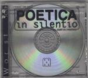

Home Artist links

| Artist: | Poetica In Silentio |
| Title: | Who Rolls The Dice |
| Label: | self produced |
| Length(s): | 27 minutes |
| Year(s) of release: | 1999 |
| Month of review: | 06/2000 |
Line up
Jurtko Moerbeek - vocals and guitars
Daan Haeyen - guitar, flute, samples
Erwin van den Broek - bass
Ruben van der Burgh - drums, percussion
Cynthia Prummel - violin, keyboard
Roland Jenster - keyboards
Tracks
| 1) | The Last One | 5.41
|
| 2) | Who Calls The Names | 5.29
|
| 3) | Illusion | 4.37
|
| 4) | Bending The Horizon | 8.43
|
| 5) | Laughter Cries | 3.05
|
Summary
This mini cd is nicely packaged with a few dice rolling around in the jewel
case and overall a renewing kind of packaging. It however makes it more
difficult to retrieve pertinent information so I just guessed that the line-up
is the same as on the debut album.
The music
This is good instrumental rock with a nod to Anekdoten, but lighter, and
King Crimson. Quite a lot of tension in the music and the additions on
violin are tasteful and lend some extra atmosphere to the music. The music
comes and goes in waves with fast paced parts alternating with moody
introspective passages. Quite late in the track the vocal parts start. These
vocals have something typically Dutch, reminding me of the vocals of bands
such as Supersister. Musically there are also some aspects of Hoyry-Kone here,
but the (now former) vocalist of the Finnish Topi is a much better performer
and singer. Who Calls The Names is the second track and it opens subtly
and darkly. The vocals sound quite intimate here while the music builds up.
Then the music gets a little bit more pace with the bass player setting it
and I hear some faint, but explicit, echoes of Genesis. The song stays in the
KC/Anekdoten vein though, with some playful percussion. Then the song changes
mood again with the organ coming in. King Crimson in its eighties incarnation
returns in the playful Illusion. The guitar sound especially reminds of Fripp
here. Bending The Horizon is a great one with some great guitar guitar work
and the spirit of Hoyry-Kone firmly present. Highly melodic, great tension
building. In some places the vocalist keeps back too much, I prefer him to
sing his heart out a bit more. The closer of this mini album is the moody
Laughter Cries which is a bit in the old Hammill style. The chorus is very
good.
Conclusion
Using their self coined name, avant-garde rock, this is a very good effort
by this Dutch band. References are Anekdoten, Hoyry-Kone and King Crimson,
but the band has a style of its own. The largest difference lies in the vocals
that may remind some of the Supersister vocals, being a bit unremarkable.
This (mini) album comes strongly recommended.
© Jurriaan Hage